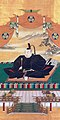

德川氏（日語：徳川氏〔德川氏〕），是由德川家康創始的日本姓氏。德川氏本來出自三河國的豪族松平氏，早期松平氏的具體事蹟與起源不詳。 永祿九年（1566年），松平家康任從五位下三河守，自稱其祖先出自清和天皇子孫（清和源氏）之中新田氏的分家「得川氏」，經朝廷獲准、「恢復」清和源氏所使用的本姓「源朝臣」，並取苗字「德川」，從此改名為德川家康。江戶幕府建立之際，限定將軍本人以及特定將軍親族可以使用德川姓氏，其他德川氏分支則使用原苗字「松平」。
-
德川氏家紋 -
 德川家康